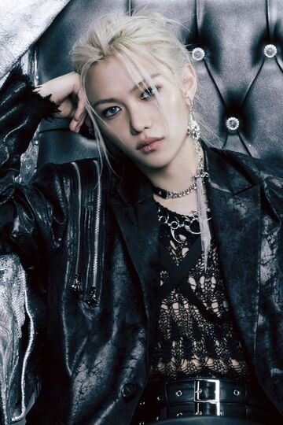
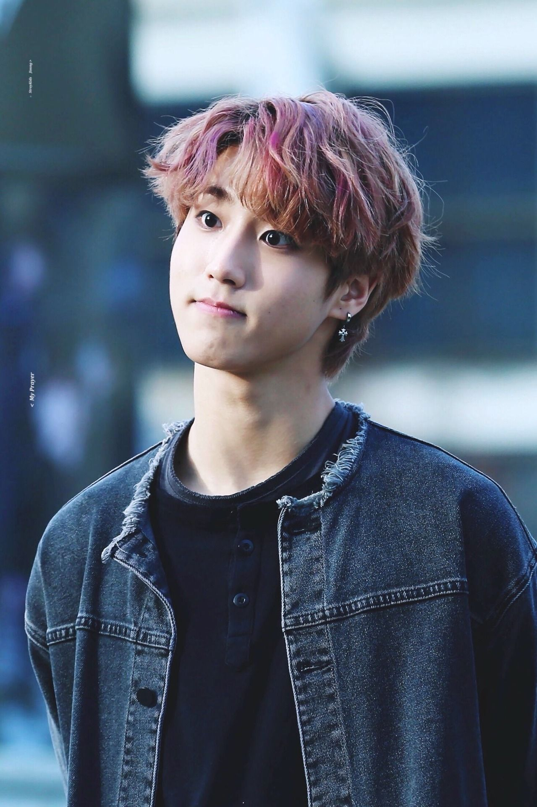
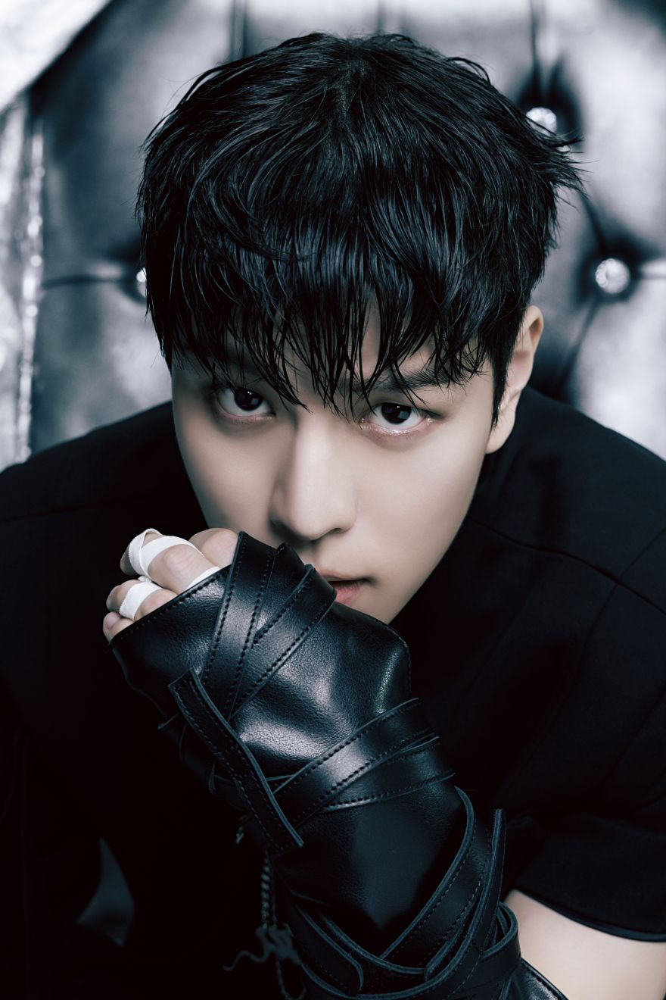

Bang Chan
The Fearless leader of Stray Kids
Changbin
A member of 3Racha and the muscle of the group

Felix
"Did you know that chicken has meat in it?" - Felix

Han
A member of 3Racha and a bonafide rockstar
Hyunjin
Tall and talented, Hyunjin looks good from any angle!
I.N.
The maknae of Stray Kids nicknamed 'Baby Bread'
Lee Know
He is the proud father of three cats: Soonie, Doongie, and Dori

Seungmin
The 'Great Singing Puppy' of Stray Kids, and a lifelong baseball fan